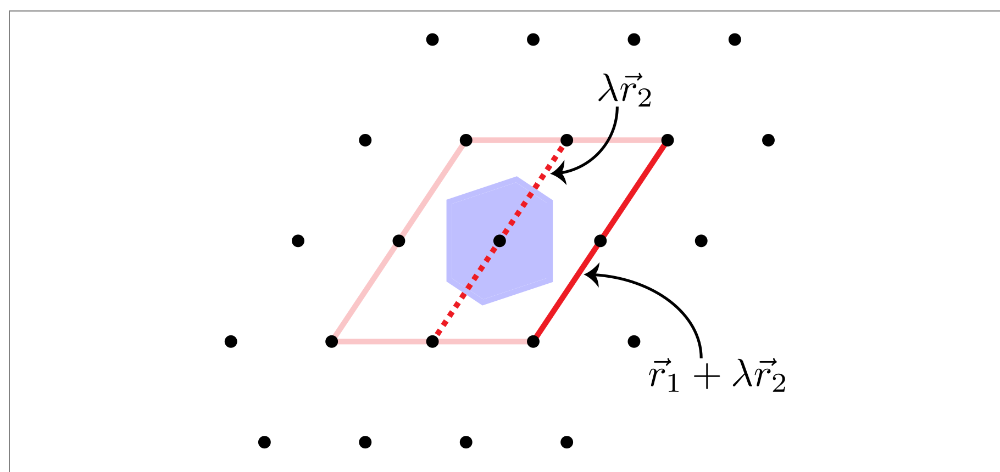

Why Minkowski reduction
Spacey's symmetry-finding algorithm rests on one structural fact: for a Minkowski-reduced lattice basis, the search for symmetry operations is exhaustive over a finite, small set of integer matrices. Twenty-seven candidate vectors per basis vector — no more — and you've covered every possible symmetry of the lattice. This page explains why. (The story is slightly more complicated when finite-precision issues are considered, but the search is still finite and small.)
The problem the theorem solves
A symmetry of the lattice is an integer matrix M such that M · A (with A = [b₁ b₂ b₃] the basis matrix whose columns are the basis vectors) describes the same lattice as A. The set of all such M forms the lattice's point group (its holohedry).
The naive approach is to search over all integer matrices. That set is infinite. To make the search finite, you need a bound on the size of the integer entries: how big can the coefficients of any candidate symmetry be?
For an arbitrary basis, the answer depends on the basis. A "long, thin" basis (one short vector and one very long one) admits symmetry operations with very large integer coefficients. A "round" basis (all three vectors comparable in length) admits only small ones. The trick is to choose the right ("roundish") basis up front.
What Minkowski reduction does
Minkowski reduction picks the basis with the shortest possible vectors that still span the lattice — formally, it requires that 12 conditions hold:
‖b₁‖ ≤ ‖b₂‖ ≤ ‖b₃‖— basis vectors are in non-decreasing length order‖b₂‖ ≤ ‖b₂ ± b₁‖—b₂cannot be shortened by adding or subtractingb₁‖b₃‖ ≤ ‖b₃ ± b₁‖, ‖b₃ ± b₂‖, ‖b₃ ± b₁ ± b₂‖—b₃cannot be shortened by adding or subtracting any combination of the previous two basis vectors
Any basis can be reduced to a Minkowski-reduced one by a sequence of integer-coefficient row operations. The reduction is implemented in MinkowskiReduction.jl and is the very first step Spacey takes on any input.
A consequence of these 12 conditions is a bound on the angles between basis vectors:
\[\frac{|b_i \cdot b_j|}{\|b_i\| \, \|b_j\|} \le \tfrac{1}{2} \quad \text{for any pair } i, j\]
Equivalently, every angle is in [60°, 120°]. Bases with sharp acute or obtuse angles can always be re-chosen with closer-to-90° angles by replacing a basis vector with its sum or difference with another — and that's exactly what minkReduce does.
The geometric picture is illustrated below in two dimensions:

Figure adapted from Hart, Jorgensen, Morgan, Forcade (2019), A robust algorithm for k-point grid generation and symmetry reduction, Fig. A1; reproduced under CC-BY 3.0.
The figure illustrates the heart of the angle bound: every point on the boundary of the union of basis cells around the origin has a closer interior cousin when the basis is Minkowski-reduced. In other words, the original cell vectors correspond to two of the black points on the pink/red parallelogram and the rotated vectors must still be in the set of the points on the parallelogram.
The proof is one line of algebra applying the Minkowski condition |b₁·b₂|/‖b₁‖ < ‖b₁‖/2 (Hart et al. §A.1.1). The 3D version, with planes through the origin instead of dashed lines, is Fig A2 of the same paper — a direct 3D analog (3 × 3 × 3 = 27 candidate lattice points) of this 2D (3 × 3 = 9) figure.
The 27-neighbor result
Now the structural claim that makes Spacey's algorithm work — the discrete-lattice-vector analog of the bounded-neighborhood picture above:
For a Minkowski-reduced basis, every lattice vector of length
≤ ‖b₃‖is expressible as an integer combination with coefficients in{-1, 0, 1}.
There are at most 27 such combinations (3 choices for each of 3 coefficients = 3³). Removing the zero vector leaves 26 distinct candidate "neighbors" of the origin — the discrete 3D analog of the bounded-neighborhood picture in the figure above (which is about continuous points in the Voronoi cell).
The intuition is short. Suppose a symmetry op σ exists. It must send each basis vector b_i to a lattice vector of the same length (symmetries preserve lengths). Because ‖σ(b_i)‖ = ‖b_i‖ ≤ ‖b₃‖, the image is one of the at-most-27 candidates above. So the symmetry is fully characterized by which 27-candidate maps to which basis vector — a finite, enumerable search.
The 27-neighbor bound and the bounded-neighborhood ("8-cells") theorem proved in Hart et al. (2019) are not the same statement — the latter is about continuous points in the Voronoi cell — but they share a proof technique: angle bounds from Minkowski reduction → bounds on the integer combinations needed → finite search space.
What reduction buys for Spacey's algorithm
Once the basis is Minkowski-reduced, finding the lattice point group is:
- Generate the 27 candidate vectors
A · [i, j, k]fori, j, k ∈ {-1, 0, 1}. - Filter triples of these that have the right lengths and volume — at most 27³ = 19,683 triples to check, but in practice the filters cut this to dozens.
- Test each surviving triple as a candidate symmetry. The test is whether
inv(A) * Bis an integer matrix to within tolerance, whereBis the candidate basis. - Close the surviving operations into the largest group.
That's the algorithm. Crucially, every step is bounded: no infinite loops, no growing search space. The 27-neighbor result makes this possible. See Algorithm overview for the pipeline in detail.
Alternatives and why we don't use them
- Niggli reduction (Niggli 1928; Křívý & Gruber 1976) produces a canonical representative for each lattice — unique up to a few special-case ambiguities. Once the Niggli cell is computed, the Bravais type (and hence the point group) follows from a table lookup. Niggli is what FINDSYM and most table-driven tools use. Spacey doesn't use it because (a) Niggli reduction is more numerically delicate at the boundary cases between Bravais types, and (b) the table-lookup path discards the integer-matrix structure that Spacey's space-group machinery needs downstream.
- LLL (Lenstra–Lenstra–Lovász) reduction is a polynomial-time approximation to Minkowski. In high dimensions it's the only practical option. In 3D, true Minkowski reduction is fast enough (and produces a tighter result), so there's no reason to settle for LLL.
- No reduction at all (the VASP approach) — search a hard-coded large window of integer combinations. Works in practice for "normal" cells, but the bounds are not provably complete: pathological inputs (extreme aspect ratios, very non-orthogonal cells) can in principle escape the window. Spacey trades a small upfront cost (Minkowski reduction is microseconds) for a provable guarantee of completeness.
What Minkowski reduction does not solve
The 27-neighbor theorem makes the candidate search complete and finite. It does not make the symmetry decision noise-free. With a noisy input basis, two questions remain:
- Does each candidate operation pass the integer-matrix test within tolerance? That depends on the choice of
tol(see Tolerances). - Does the resulting set of operations close into a group? If a near-symmetric input produces "almost-symmetries" that close at a higher group than the true one, Spacey reports the higher group. That's the over-promotion failure mode (see Over-promotion).
Minkowski reduction is the foundation; tolerance handling is the superstructure built on it.
See also
- Explanation: Algorithm overview, Tolerances, Over-promotion
- Reference:
pointGroup - External: MinkowskiReduction.jl; Hart, Jorgensen, Morgan, Forcade (2019), J. Phys. Commun. 3, 065009.